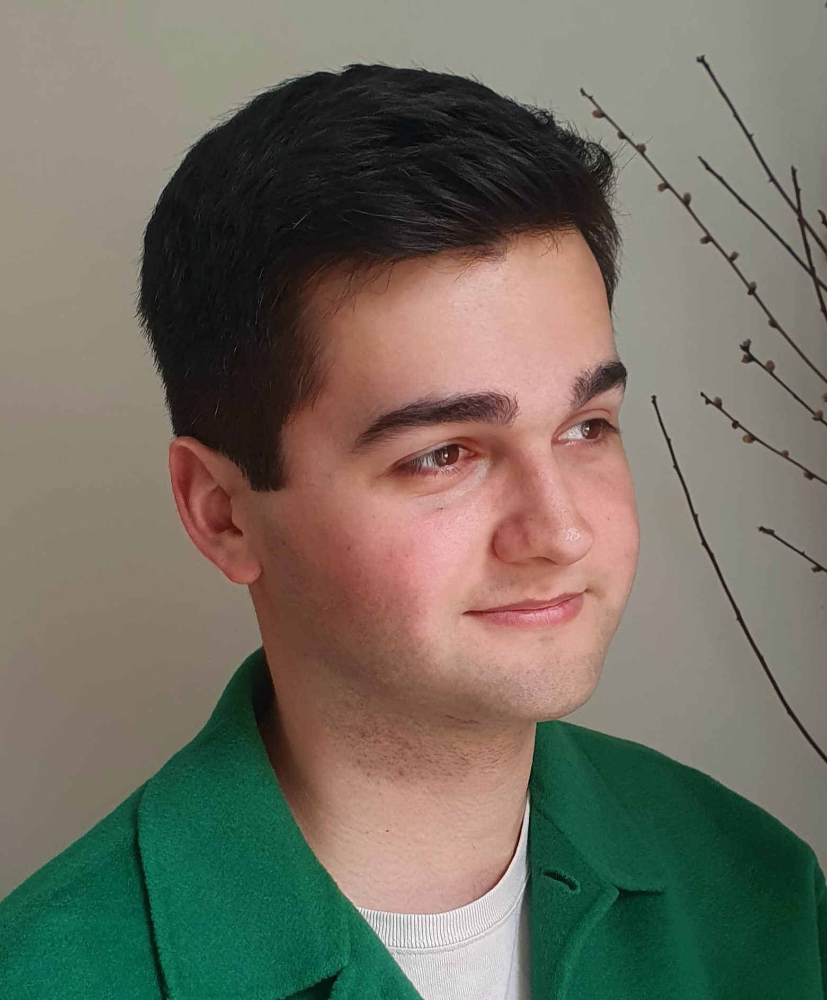

I am a PhD student in applied mathematics under the supervision of Anna Rozanova-Pierrat, in the Fédération de Mathématiques (CNRS FR-3487) and the MICS laboratory in CentraleSupélec, Université Paris-Saclay.
The work I conduct during my PhD focuses on the consideration of irregular geometries in the analysis of elliptic PDEs, with applications in the resolution of inverse problems (inverse scattering, imaging...) involving such shapes.
I have a master's degree from the Institut Mathématiques d'Orsay in Mathematics of Randomness, as well as an engineering degree from CentraleSupélec, where I followed the Parcours Recherche, a three-year research project carried out in parallel of the engineering curriculum.
Research interests
- Analysis of PDEs on Sobolev extension domains
- Potential theory
- Inverse problems
- Domain convergence
Publications
Accepted
- Layer potential operators and transmission problems on extension domains
with Michael Hinz, Anna Rozanova-Pierrat and Alexander Teplyaev
Journal des Mathématiques Pures et Appliquées, 2026
Open access: [HAL] - Existence of optimal shapes for heat diffusions across irregular interfaces
with Anna Rozanova-Pierrat
Fractal Geometry in Pure and Applied Mathematics, American Mathematical Society, 2026
Open access: [HAL]
Preprints
- Helmholtz transmission problem and intrinsic impedance scattering problem on extension domains
Submitted, 2026
Open access: [HAL] - Poincaré-Steklov operator and Calderón's problem on extension domains
with Michael Hinz and Anna Rozanova-Pierrat
Preprint, 2025
Open access: [HAL] - Convergence of layer potentials and Riemann-Hilbert problem on extension domains
with Anna Rozanova-Pierrat and Alexander Teplyaev
Submitted, 2026
Open access: [HAL]
Theses
- Functional, spectral and probabilistic analysis on Sobolev extension domains
Université Paris-Saclay, CentraleSupélec
Master's thesis, 2023
Open access: [DUMAS]
Talks
- CJC-MA 2026, École Nationale des Ponts et Chaussées, Champs-sur-Marne, France
March 2026
Talk entitled "Optimisation for the intrinsic impedance scattering problem on extension domains" - Cornell Conference on Analysis, Probability, and Mathematical Physics on Fractals, Cornell University, Ithaca, USA
June 2025
Keynote talk entitled "The Riemann-Hilbert problem on extension domains" - Visit by the CNRS Insmi of the Fédération de Mathématiques, CentraleSupélec, Université Paris-Saclay, Gif-sur-Yvette, France
May 2025
Talk entitled "Le problème de Riemann-Hilbert sur domaines d'extension" - MICS laboratory winter party, CentraleSupélec, Université Paris-Saclay, Gif-sur-Yvette, France
December 2024
Talk entitled "Approximating problems involving irregular and fractal shapes: a travel from space to space" - MICS laboratory summer party, CentraleSupélec, Université Paris-Saclay, Gif-sur-Yvette, France
June 2024
Talk entitled "Irregular shapes in mathematical problems: why and how" - Analysis on fractals and networks, and applications, CIRM, Marseille, France
March 2024
Talk entitled "Poincaré-Steklov and Neumann-Poincaré operators for extension domains" - MathTech Meetings 2024, IHES, Bures-sur-Yvette, France
January 2024
Pitch entitled "Dealing with the irregular in imaging problems" - Seminar of the Fédération de Mathématiques, CentraleSupélec, Université Paris-Saclay, Gif-sur-Yvette, France
November 2023
Seminar entitled "Layer potentials and imaging on irregular domains"
Responsibilities
-
Co-organiser of the conference "Kinetic equations and turbulence" in honour of Claude Bardos's 85th birthday
Conference held in April 2025, in CentraleSupélec, satellite workshop in the Collège de France
Co-organised with Anna Rozanova-Pierrat, François Golse, Daniel Bouche and Norbert Mauser
Website: [Sciencesconf]
Teaching
- Teachings in CentraleSupélec
* Mentoring sessions and coordination of the mentoring teamType Level Description Total Years Language Tutorial L3 Convergence, Integration and Probabilities 45h 23-26 FR Partial Differential Equations 45h Project M1 Control of the acoustic and electromagnetic pollution 81h 23-26 FR Mentoring* L1 Mathematics for the Bachelor of Global Engineering 40h 23-25 EN Tutorials 8h 25-26 EN
Last update: